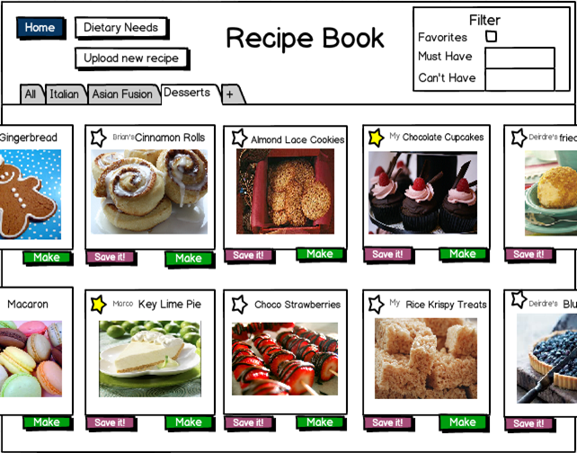
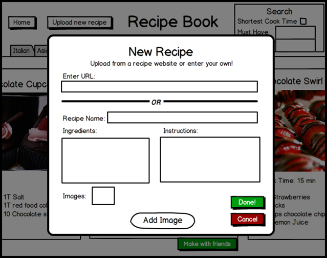
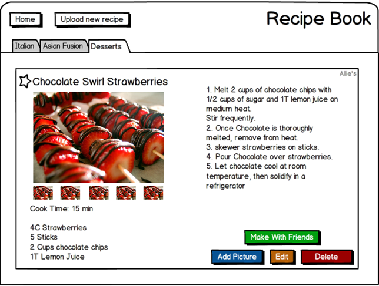
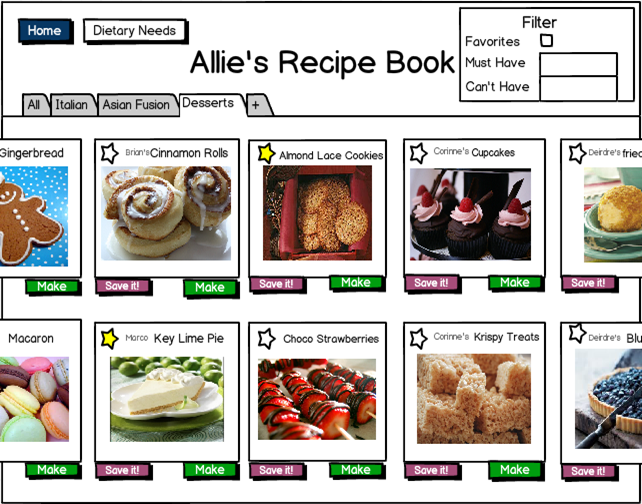

Fallera - Social Cooking
Human Factors Interface Design, Fall 2012

The recipe book page is accessed using the "My Recipe Book" button on the main page. The recipe book shows the user's recipes as images on small cards, with the option to make each recipe in the book.
Tapping the "Upload New Recipe" button on the top of the recipe book page brings up a modal window which allows the user to paste in a URL from a recipe-sharing site or input information on his / her own recipe. If the user pastes in a URL, the site will extract the same information as the user is requested to input for a non-online recipe: title, ingredients, instructions, and images.
Tapping a recipe card brings up the full recipe. The user has the option to edit recipes in his or her recipe book, including deleting the recipe and adding new pictures, as well as to make the recipe with friends. Tapping the "make" button takes the user to the "Create New Event" page with that recipe selected.
Through the "Friends' Recipe Books" page, the user can view his or her friends' recipe books. A friend's recipe book (shown below) looks similar to the user's, but the friends' name appears at the top. The user can save friends' recipes but cannot edit them.
